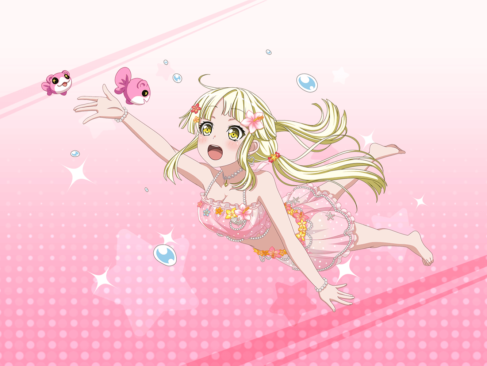

CiRCLE スタジオ
こころ
みんな！ 今日はおみやげを持ってきたの！
美咲
あー、こころとはぐみ、
この前若宮さん達と海行ったんだっけ。
そのおみやげ？
はぐみ
うんっ！
すっごく楽しかったよ！
はい、これははぐみから！
花音
わぁ、かわいいお魚クッキーだね
薫
ああ、食べるのがはばかられるような儚さだね……！
ありがとう、はぐみ
こころ
あたしからはこれよ！
美咲
……え、なにこのTシャツ……
『地を割る如くスイカ割れ』……？
こころ
ステキでしょ！
他にもたくさん種類があるのよ！
美咲
『割るか割られるか』……って、
な、なにこれ、絶対街中では着れないんだけど……
花音
こ、このTシャツ……どうしたの？
こころ
スイカ割り大会の人が売ってたのよ！
大会に参加した、いい記念になるわよね！
薫
スイカ割りか、夏らしくてステキだね。
こころが割ったのかい？
こころ
いいえ、有咲よ！
とっても上手だったんだから！
はぐみ
うん、あーちゃんはすごかったよ！
それからね、ビーチバレーもしたし、いっぱい泳いだし……
はぐみ
あっ、そうだ！
はぐみね、ちっちゃなお魚さん達と一緒に泳いだんだよ！
こころ
そうだったわね！
キレイなお魚さんがたくさんいたわ！
こころ
海ってステキね！
とっても楽しい１日が過ごせたわ！
薫
フフ、それは何よりだね。
二人の話を聞いているだけで、私まで心が弾んでくるよ
こころ
あ、でも、サメさんに会えなかったのは残念だわ！
美咲
えっ、サメ！？
花音
こ、こころちゃん、サメに会いたいの！？
こころ
ええ、もちろん！ サメさんとも遊びたいわ！
でも、この前の海では会えなかったのよね
薫
海の生き物はかわいいけれど、サメはさすがに危険じゃないかい。
もしこころがケガなんてしてしまったら……
はぐみ
そうだよね、薫くん！
こころんってばさ、海で背びれみたいなの見つけて
どんどん近づいて行っちゃったんだよ！
こころ
でも、実際はただの板切れだったの！
サメさんと遊べると思ったんだけど
はぐみ
本物のサメじゃなくて本当によかったよ！
もう、すっごくすっごく心配したんだからね！
こころ
そんなに心配しなくたって大丈夫よ！
だってサメさんってとってもおとなしいのよ！
こころ
昔行った海には、大きくておとなしいサメさんがいたの。
よく一緒に泳いで遊んでいたわ！
とっても仲良しなのよ？
はぐみ
……本当に？ 怖くない？
こころ
ええ！ ちっとも怖くなんてないわ！
はぐみ
こころんが言うなら、そうなのかも！
それならはぐみも、サメさんと仲良くなりたい！
こころ
とってもステキね、はぐみ！
あなたならきっとすぐに仲良くなれるわ！
美咲
ちょ、ちょっとはぐみ！？
花音
……ねえ、美咲ちゃん。
もしかしたら……こころちゃんが言ってるのって、
ジンベエザメのことかも
美咲
え、ジンベエザメ？
花音
うん。すごくあたたかい海に生息するサメで、おとなしいの。
こころちゃんは、南の島で本当にサメと遊んでたのかも……
美咲
ジンベエザメでも一緒に遊ぼうとは
思わないけどね……
美咲
てか待って、こころが昔行ってた南の島って……
もしかして、この前行ったハピハピ島？
こころ
そうよ、美咲！
あのサメさんと遊んだのは、ハピハピ島なの！
はぐみ
わ～っ、それじゃ、ハピハピ島に行けば
サメさんと仲良くなれるのっ！？
こころ
ええ、そうよ！
次は、みんなで一緒にサメさんと遊びましょう！
薫
ああ、それはステキな考えだね。
前回のスリリングな冒険もとても儚かったけれど、
優雅なバカンスにもあの島はピッタリだろうね
花音
ふふ、またハピハピ島に行けるなんて嬉しいな。
ね、美咲ちゃん？
美咲
まあ……うん、そうだね。
キレイな場所だったし、また行けるのは嬉しいかな
こころ
決まりね！
ああ、次の夏が待ち遠しいわ！